Isso mesmo Carol! Existem vários tipos de regiões repetitivas no nosso genoma, mas as mais utilizadas atualmente, para diferenciar uma pessoa da outra, são as regiões chamadas de microssatélites.

Regiões de microssatélites repetem de duas a seis pares de bases nitrogenadas uma ao lado da outra. Para que você possa entender melhor, vou desenhar no quadro os vários níveis de empacotamento do DNA, desde máximo de condensação de um cromossomo metafásico, até a sequência da dupla-fita de DNA. Veja!
